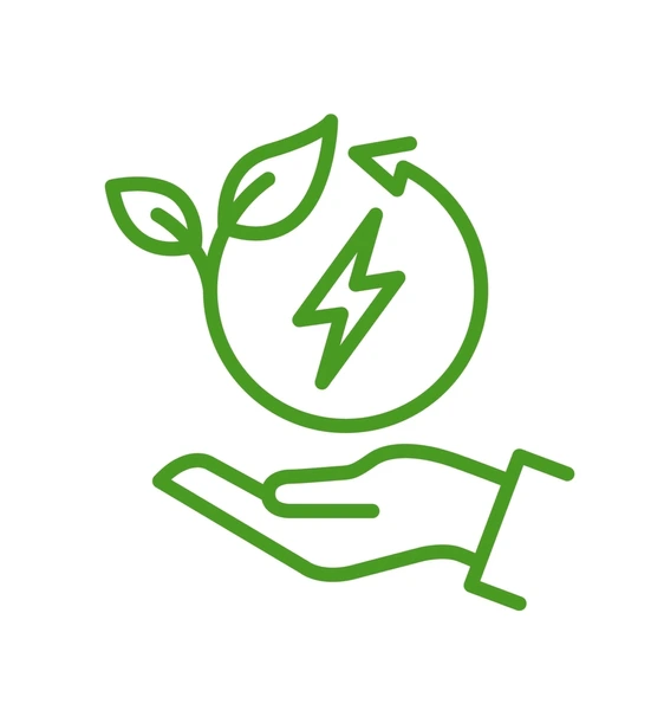

Ahorro energético
En esta página encontrarás información sobre el ahorro energético; como mejorar la eficencia de energía en tu hogar; tips para evitar aumentar el consumo (y con esto el costo de tu factura); y una calculadora de consumo energético, en la cual podrás verificar que el consumo reflejado en tu factura de electricidad es correcto de acuerdo a los electrodomésticos que tienes.
Importancia del ahorro
energético
El ahorro energético es crucial tanto para el bienestar del planeta como para la economía de los individuos y las empresas. Al reducir el consumo de energía, disminuimos la emisión de gases contaminantes que contribuyen al cambio climático, protegiendo el medio ambiente y preservando los recursos naturales para las futuras generaciones
Además, el ahorro de energía ayuda a reducir la dependencia de fuentes no renovables, promoviendo el uso de energías limpias y sostenibles. Este tipo de medidas, como la eficiencia energética en la industria, el transporte y los hogares, puede marcar una diferencia significativa en la lucha contra la crisis ambiental.
